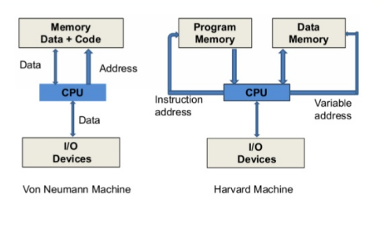
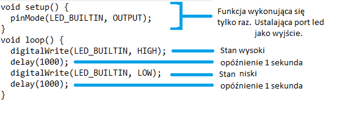

Czym jest Mikrokontroler?
scalony system mikroprocesorowy, zrealizowany w postaci pojedynczego układu scalonego zawierającego jednostkę centralną (CPU), pamięć RAM oraz rozbudowane układy wejścia-wyjścia i na ogół pamięć programu jako FRAM, MRAM, ROM lub Flash.
Uproszczony schemat budowy Mikrokontrolera
Rodzaje Mikrokontrolerów
Mikrokontrolery są podzielone na kategorie według ich pamięci, architektury, bitów i
zestawów instrukcji
Podział wedle ilości Bitów:
8-bitowe mikrokontrolery wykonują operacje logiczne i arytmetyczne.
16-bitowe mikrokontrolery działają z większą dokładnością i wydajnością w przeciwieństwie do 8-bitowego.
Podział wedle rodzaju pamięci:
Mikrokontroler pamięci zewnętrznej - Gdy wbudowana struktura jest zbudowana z mikrokontrolera, który nie składa się ze wszystkich działających bloków istniejących na chipie, jest nazywany mikrokontrolerem pamięci zewnętrznej.
Mikrokontroler wbudowanej pamięci - Gdy wbudowana struktura jest zbudowana z mikrokontrolera, który składa się ze wszystkich działających bloków istniejących na chipie, nazywa się go mikrokontrolerem wbudowanej pamięci.
Podział wedle rodzaju zestawów instrukcji:
Podział wedle architektury pamięci
Harvard Memory Architecture Mikrokontroler
Mikrokontroler Princeton Memory Architecture
Róźnica pomiędzy architekturą z Princeton a z Harvardu

Najpopularniejsze mikrokontrolery
Najczęsciej używanymi mikrokontrelami są mikrokontrolery amerykańskiej firmy Atmel
Lista Najpopularniejszych mikrokontrolerów Atmel
ATtiny - seria niskonapięciowych mikrokontrolerów o małych rozmiarach i niskim poborze mocy.
ATmega - seria mikrokontrolerów wykorzystywanych w różnych aplikacjach, w tym w urządzeniach przemysłowych, elektronice użytkowej i automatyce domowej.
AVR XMEGA - seria mikrokontrolerów o wysokiej wydajności i niskim poborze mocy, wykorzystywanych w różnych aplikacjach, w tym w automatyce przemysłowej i systemach zasilania.
AVR UC3 - seria mikrokontrolerów z rdzeniem AVR32, wykorzystywanych w różnych aplikacjach, w tym w urządzeniach medycznych, przemysłowych i automotive.
Mikrokontrolery innych producentów
RP2040 - Mouser Electronics
ESP8266 - Espressif Systems
ESP32 - Espressif Systems
STM32 - STMicroelectronics
MSP430 - Texas Instruments
CPLD - Altera
FPGA - Lattice
Arduino
Projekt zapoczątkowany został w 2005 roku we Włoszech w celu zbudowania urządzenia kontrolującego studenckie projekty interakcyjne jako tańsza alternatywa dla innych dostępnych wtedy systemów prototypowania. Użyli oni właśnie mikrokontrolerów do stworzenia płytek rowojowych. Do października 2008 roku zostało sprzedanych ponad 50 000 sztuk Arduino. Tak powstała firma, znana dziś jako Arduino.
Pierwsze seryjnie produkowane Arduino
Programowanie
Oprogramowanie dostarczone przez producenta:
- Arduino Legacy IDE
- Arduino IDE 2.0
Szkic to program napisany za pomocą Arduino IDE. Szkice są zapisywane na komputerze jako pliki tekstowe z rozszerzeniem .ino. (Arduino Software (IDE) w wersji starszej niż 1.0 zapisywało szkice z rozszerzeniem .pde.)
Język którym możemy programować arduino przy pomocy IDE producenta jest pochodną języka C i C++

Inne płytki pokroju Arduino
Dziękujemy Za Uwagę
Jakub Broja
Piotr Ciechanowski